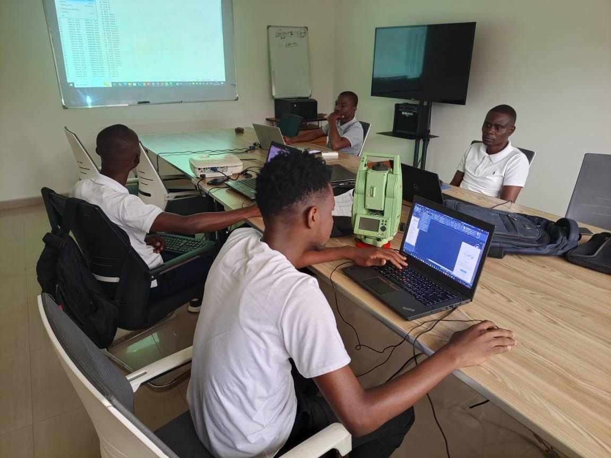
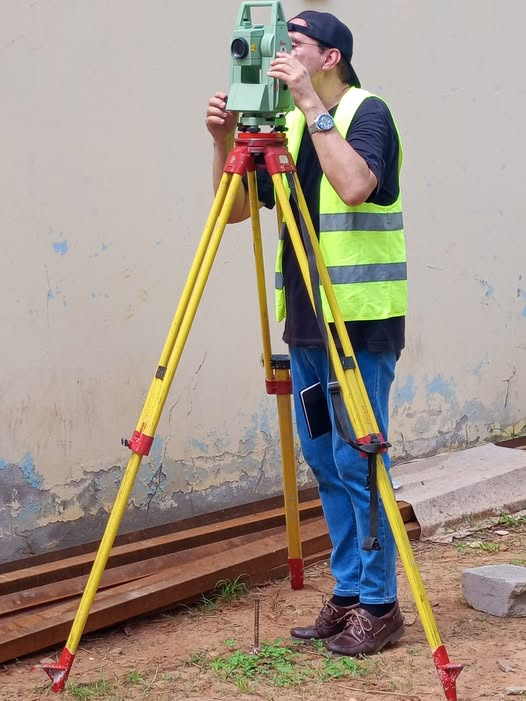
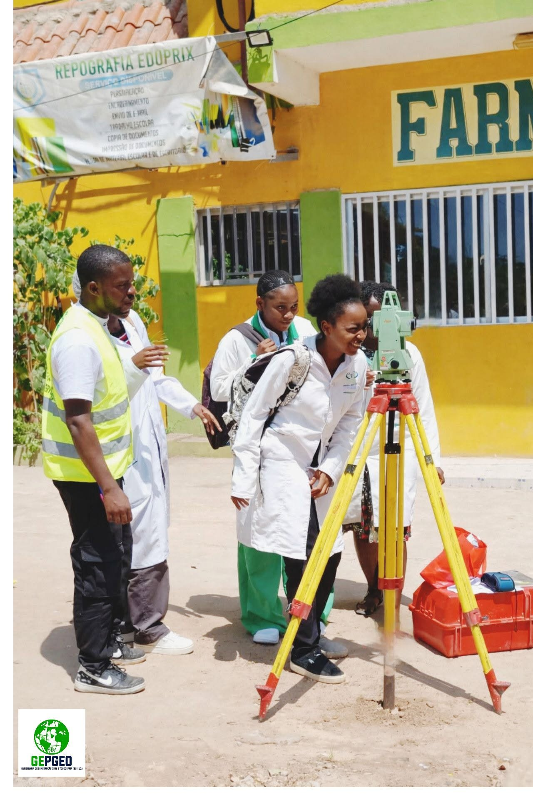

O que fazemos
Serviços técnicos de precisão, do terreno ao relatório
01 · Topografia
Levantamento e implantação com rigor geodésico
Utilizamos GPS Geodésico RTK e Estação Total para garantir posicionamento, alinhamento e nivelamento precisos em qualquer tipo de terreno — a base de qualquer projecto de engenharia bem-sucedido.
- Levantamento Topográfico
- Implantação de projectos
- Georreferenciamento
- Nivelamento
- Cálculo de volumes

02 · Geoprocessamento
Dados geográficos que sustentam boas decisões
Produzimos cartografia, bases de dados geográficos e mapeamento aerofotogramétrico com drone, processados em QGIS, ArcGIS e Pix4D, para projectos públicos e privados de qualquer escala.
- Sistemas de Informação Geográfica (SIG/GIS)
- Deteção remota (imagens de satélite e drone)
- Cartografia
- Bases de dados geográficos
- Mapeamento aerofotogramétrico com drone
03 · Fiscalização e Apoio Técnico
Controlo de qualidade do início ao fim da obra
Acompanhamos a execução de projectos com supervisão geral e controlo de qualidade técnica, assegurando que a obra corresponde exactamente ao projectado — com relatórios claros para o cliente.
- Controlo de qualidade técnica
- Monitoramento de projectos
- Supervisão geral de obra


04 · Formação Profissional
Capacitação técnica para estudantes e profissionais
Formamos a próxima geração de técnicos com cursos práticos, ministrados por profissionais experientes, alinhados às ferramentas realmente usadas no mercado angolano.
- Topografia (Civil 3D)
- Cartografia (ArcGIS e QGIS)
- Medições e Orçamentos
- Fiscalização de Empreitadas
Equipamentos e tecnologias
Instrumentos modernos, dados fiáveis
Fale com a nossa equipa